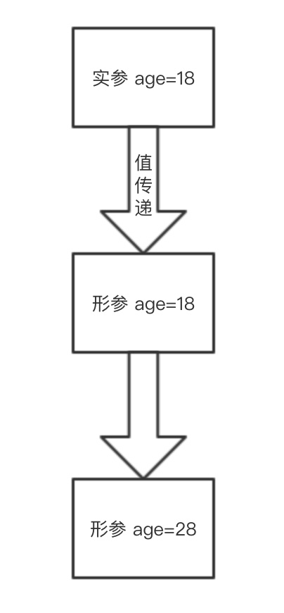
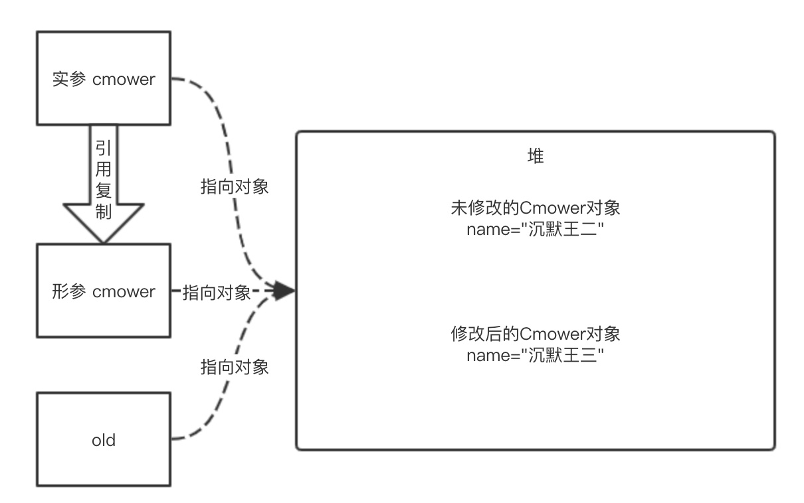

在逛 Stack Overflow 的时候，发现了一些访问量像阿尔卑斯山一样高的问题，比如说这个：Java 到底是值传递还是引用传递？访问量足足有 188万+，这不得了啊！说明有很多很多的程序员被这个问题困扰过。实话实说吧，我就是其中之一。
来回顾一下提问者的问题：
我一直认为 Java 是按引用传递的，但是我看一些博客上说不是的。我就纳闷了，Java 到底是值传递还是引用传递？值传递和引用传递有什么区别呢？
如果你也曾被这个问题困扰过，或者正在被困扰，就请随我一起来梳理一下问题的答案。打怪进阶喽！
什么是值传递，什么是引用传递？我们需要先把这两个定义搞清楚，才能搞清楚 Java 是按值传递还是按引用传递。
值传递（pass by value）是指在调用方法时将实参复制一份传递到方法中，这样当方法对形参进行修改时不会影响到实参。
引用传递（pass by reference）是指在调用方法时将实参的地址直接传递到方法中，那么在方法中对形参所进行的修改，将影响到实参。
上面是比较官方的定义，读起来不免生硬。在我看来，值传递和引用传递的关键区别有两点：
1）调用方法时有没有对实参进行复制。
2）方法内对形参的修改会不会影响到实参。
what？值传递和引用传递还没有搞清楚，又来两个新名词：实参和形参。别急，别急。
实参和形参理解起来比值传递和引用传递容易的多，前者就好像是一元一次方程，后者就像是一元二次方程。
形参：定义方法名和方法体的时候使用的参数，目的是用来接收调用该方法时传入的参数。
实参：在调用有参方法时传入的参数，方法名后面的括号中的参数通常被称为“实参”。
大家应该都写过“hello world”程序了，就像下面这样。
public class Cmower {
public static void main(String[] args) {
System.out.println("hello world");
}
}其中 args 就相当于是形参，而字符串“hello world”就相当于是实参。如果觉得这个例子不容易理解，那再来看一个。
public class Cmower {
public static void main(String[] args) {
Cmower cmower = new Cmower();
cmower.sop("沉默王二");
}
public void sop(String name) {
System.out.println("hello " + name);
}
}其中“沉默王二”为实参；有参方法 sop(String name) 中的 name 为形参。形参就好像实参与被调用方法之间的一个桥梁，否则调用者没法传递参数，被调用的方法无法接收参数。
Java 中的数据类型可以分为两种，一种是基本类型，一种是引用类型。我相信大家在看本篇文章之前，就能够达成这样一个共识：基本类型是值传递的。这一点毫无疑问。
public class Cmower {
public static void main(String[] args) {
Cmower cmower = new Cmower();
int age = 18;
cmower.sop(age);
System.out.println("main 中的 age " + age);
}
public void sop(int age) {
age = 28;
System.out.println("sop 中的 age " + age);
}
}上面这段代码中，sop() 方法的实参 age 为 18，尽管 sop() 方法的形参被修改为 28，但并不会影响实参的值。这一点可以从输出结果中加以证明。
sop 中的 age 28
main 中的 age 18具体的执行过程如下图所示。

大家之所以不确定 Java 是值传递的还是引用传递的，原因就出在这个引用类型上面。单从字面的意思上就容易搞混：引用类型不是引用传递难道还是值传递？
public class Cmower {
private String name;
public String getName() {
return name;
}
public void setName(String name) {
this.name = name;
}
public static void main(String[] args) {
Cmower cmower = new Cmower();
cmower.setName("沉默王二");
cmower.sop(cmower);
System.out.println("main 中的 cmower " + cmower.getName());
}
public void sop(Cmower cmower) {
cmower.setName("沉默王三");
System.out.println("sop 中的 cmower " + cmower.getName());
}
}在 main() 方法中，我们通过 new 关键字创建了一个对象 cmower，并将其 name 属性设置为“沉默王二”；然后将实参 cmower 传递给 sop() 方法，在 sop() 方法中将形参 cmower 的 name 属性修改为“沉默王三”。输出结果是什么样子呢？
sop 中的 cmower 沉默王三
main 中的 cmower 沉默王三呀！实参 cmower 的属性 name 竟然不是“沉默王二”而是“沉默王三”了！看看，看看，Java 不是值传递吧？
别急别急。我们在 main 方法中追加几行代码。
Cmower cmower = new Cmower();
cmower.setName("沉默王二");
Cmower old = cmower;
cmower.sop(cmower);
System.out.println("main 中的 cmower " + cmower.getName());
System.out.println(old == cmower);old == cmower 会是 true 还是 false 呢？闭上眼睛想一想。如果实在是想不出，抛一枚硬币吧，反正不是 true 就是 false。假如引用类型是引用传递的，根据引用传递的定义（形参的修改将会影响到实参），那么结果一定就是 false。
我们来看一下输出结果：
sop 中的 cmower 沉默王三
main 中的 cmower 沉默王三
truetrue？开什么玩笑？
不好意思，没有开玩笑。Java 的确是值传递的。只不过，引用类型在调用有参方法的时候，传递的是对象的引用，并不是对象本身。而对象的引用在传递的过程中并没有发生改变，虽然对象本身发生了变化。可以通过下面这幅图感受一下。

这下理解了吧？
来看下面这段代码。
int age = 18;
String name = "沉默王二";age 是基本类型，所以值就直接保存在变量中；而 name 是引用类型，变量中保存的只是对象的内存地址，这种变量一般称之为对象的引用。
基本类型作为参数被传递时肯定是值传递；引用类型作为参数被传递时也是值传递，只不过“值”为对应的引用。
好了各位读者朋友们，以上就是本文的全部内容了。能看到这里的都是最优秀的程序员，我必须要为大家点个赞👍。如果觉得不过瘾，还想看到更多，我再推荐几篇给大家。
370W+程序员关注过的问题：如何比较 Java 的字符串？
250W+程序员关注过的问题：什么是 NullPointerException？
50W+程序员关注过的问题：为什么会发生ArrayIndexOutOfBoundsException？
如果想要第一时间看到我更新的文章，可以微信搜索「沉默王二」，关注我的公众号，回复「java」再送你一份精选电子书大礼包，包含这十年来我读过的最优质的 Java 书籍。